Azure websites are a great way to get a blog up quick and easily, and for relatively low costs.
In this blog post, we are going to setup a WordPress blog on an Azure websites. Azure Websites provide a great environment for quickly and easily setting up websites to explore different technologies. Are you looking for a place to explore Node.js, create an Azure Website. Want to develop DotNetNuke site and explore, whip up an Azure website and explore to your heart's content. Looking for a Linux box to do some development for? Create a Virtual Machine
So, what do we need to do?
First things first, you need to sign up for a windows azure account and a 90-day Free Trial. This will require you to provide a mobile phone, for verification purposes, and a credit card, which you only need if you exceed the limits for the free trial, which only happens if you remove the spending limit.
Go to http://www.windowsazure.com and click Free Trial. You
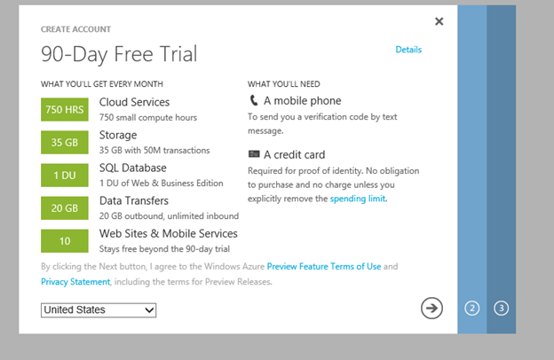
You free trial contains up to 10 Web Sites and Mobile services, a SQL database, 35 GB of strogae and 750 hours of small compute hours. This will essentially allow you to create a blog a Azure shared instance for free. Click the next arrow (right by two).
You will be asked to verify your account via a SMS message to your phone. Step three will ask you to setup a credit card information, after which, your Azure subscription is being setup
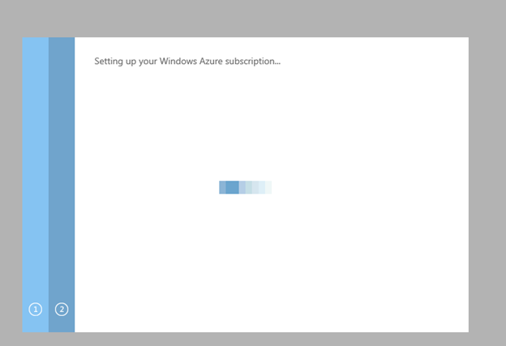
Now that your Azure account is setup, you can start creating web sites, virtual machines, storage, etc. We are going to create a blog site, which is a web site.
Jump to the Azure Management portal
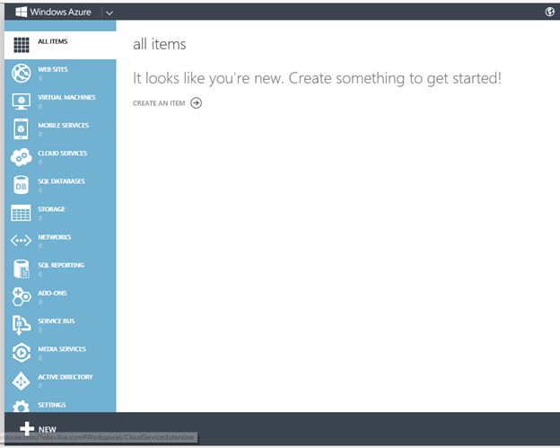
And click the new button in the bottom left.
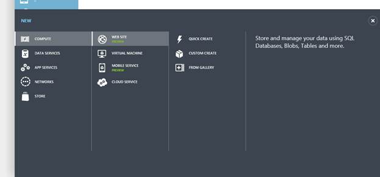
Click Web Site and chose From Gallery
Azure provide a lot of "starter" sites in it's Gallery. It can range from DotNetNukeSites, Drupal sites, Wiki sites, eCommerce engines, etc. We are interested in creating blog. Select that and you can see there are a myriad of blog types to choose from
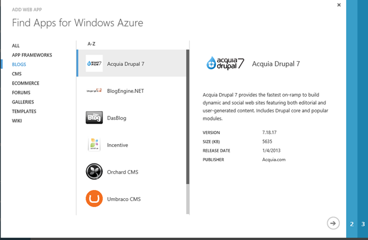
We are going to use WordPress, a very popular blogging engine based on PHP. Once you find Wordpress, highlight it and click the next button.
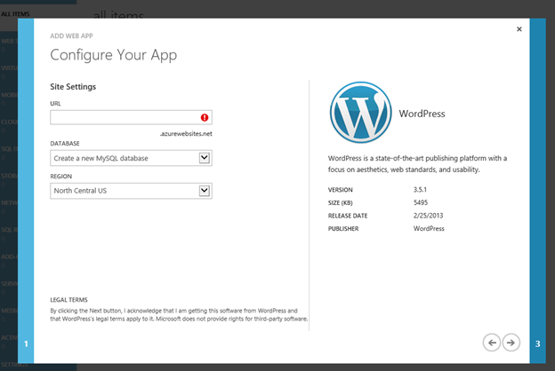
All Azure Websites are on the domain azurewebsites.net. You will need to select a unique name for your website. In this case, we will use TheEndless.azurewebsites.net for our URL.
Next, WordPress relies on MySql for their back end database, so we will need to create one. The good news is, Azure takes care of all of that for you. Last, you will need to pick a geographic region for your site to be hosted. You want it to be close to where the majority of your users will be. The North Central US datacenter, which is located in Chicago, fits the bill for us.
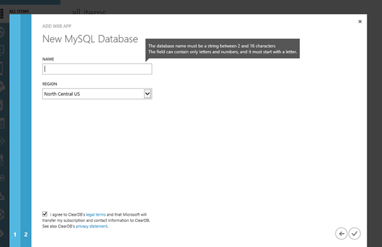
aWe provide a unique name to the databse and approve the ClearDb legal terms. ClearDb has partnered with Microsoft on their MySql implementation. Once you click the checkbox, it will provision up your Azure Website. This process will take a few minutes.
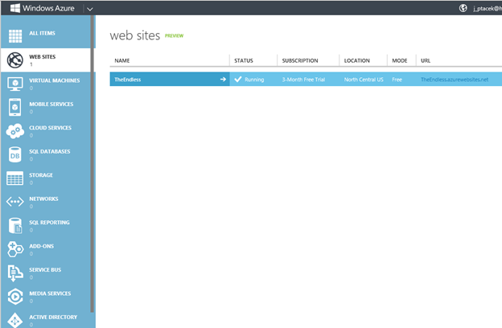
Once the site is provisioned you can click on the link and you will be taken to the WordPress configuration site to finalize creation of your blog.
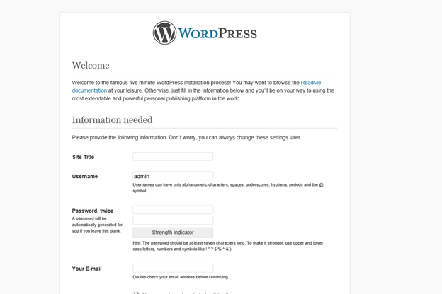
Here, you will provide a site for your title, we are going to go with The Endless. Next, you will setup a username for your site. DO NOT use admin, change it to something different. In my case, I will use my name. You will provide an email address for the site and finally a privacy check box. You DO want to check this, as it will enable search engines to find your site. That is, after all, the whole purpose of being you J After entering in this information, choose Install Wordpress. It will run for a second, and then you can login.
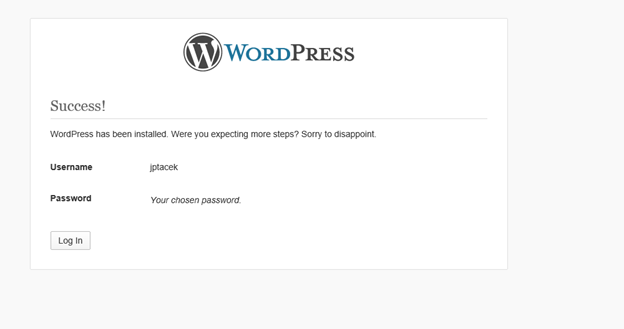
You now have your blog up and running!
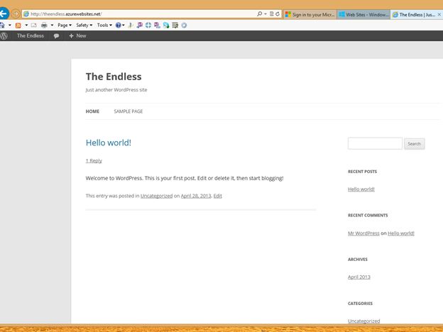
In our next part, we will explore WordPress.